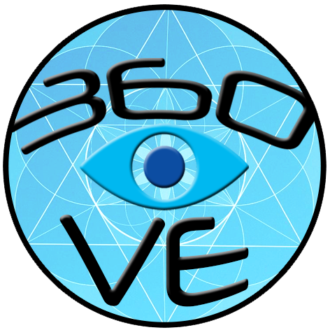
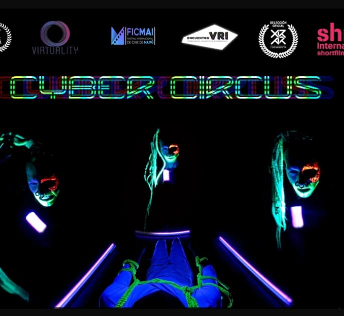

Artist-Researcher XR Developer VR Experience Design Professor
I believe in the sanctuary of the body, where flesh and circuitry intertwine and symbiotic choreography unfolds. Embracing the digital tempest, I challenge the binary tides by creating bonds that transcend mere transaction.In this convergence, where ‘the immaterial merges with the corporeal and the imaginary with the strangely real’, I weave my way through the digital expanse, weaving narratives. Here, pixels pulsate with the heartbeat of intention, and algorithms hum in harmony with the whispers of our humanity.
In my artistic practice, I delve into the intimacy where bodies meet the digital extension of Extended Reality (XR). A narrative performance that transcends the mere limits of perception.
My exploration revolves around the immersive medium of Virtual Reality (VR) and wearable interfaces, using bio-sensing to perceive breath. At the liminal threshold between the tangible and the digital, I attempt to navigate the knowledge of the subtle body, unravelling the unique space in which the human experience of intuitiveness is sculpted.
By introducing performance in the realm of XR installations, I create a safe space for an intimate interaction between the user and the performer. It is the invitation I extend towards a sensory journey, trying to unravel the language of immersive technology through performance. In the midst of this narrative, the intention is to engage one's breath as an interface for deep listening, resonating with an awareness of the essence of life.
My main interests lies in:
>Development & design for VR
>Biosensing and Wearable Interfaces
Hybrid Live Performance
PINCH TO AWAKEN XR
The project is part of my research-creation master's thesis, in Technology and Aesthetics of Electronic Arts (initiated in 2021 and defended in 2023) entitled: Pinch to Awaken. Breathing as a technology of self-knowledge. The body as a didactic material. Virtual Reality as a language and scenario.
Situated at the intersection of Somesthetic Interaction Design, Human-Computer Interaction (HCI), Tangible Computing, Game Studies, Performance and Extended Reality (XR); this project proposes to re-establish the significance of ‘breath’ as a gesture of attention towards the body.
Developed through international artistic residencies and grants, the project is currently a functional prototype that requiring multidisciplinary collaboration for completion. While the primary goal is to exhibit it to audiences, it remains primarily a research-creation endeavor. I am leveraging this work as a foundation in my pursuit of a doctoral program.
PORTFOLIO
PAST ARTWORKS
360VE
We are an audiovisual production company and we create content in Virtual Reality. We offer comprehensive production services for the design of VR worlds, we create video and 3D content. We are dedicated to script, adapt, produce, record and post-produce 360° videos and create immersive interactive applications. We also provide advice for the correct visualization of the productions and the devices to be used.

CREATIVE CODE with PROCESSING
ARDUINO & ROBOTIC
EMPATHY VR
An immersive virtual reality experience designed to explore the depth of human emotions and foster connections through shared experiences.
Exercise realized in 2018 for the Master's Degree in Technology and Aesthetics of Electronic Arts - UnTref
Making of
360 degrees video exclusively designed to be viewed in a virtual reality headset.
CYBER CIRCUS
An experimental performance that intertwines digital and physical realms, challenging perceptions of reality and immersing viewers in a surreal world of circus horrors.

A very realistic nightmare in the first person is transmitted by streaming: Circus characters illuminated with their own light perform a torture show with rope ties. Users online around the world are placed in front of their screens in which the blood does not cast shadows, only sets the contrast...
Exhibited at the International Immersive Film Festival and XR. September 27 to 29 2019. Casa de la Cultura Quilmes. Argentina. The user must sit in a chair, the RV helmet is placed and the wrist is attached to the chair arms, there are the vibrating motors. When the user looks down, towards his body in the real world, in the virtual world he will also have the sensation of looking at a body. This gesture activates the circuit and the motors start, recreating the physical sensation of a doll's squeeze, since in fiction, the virtual body is tied to the chair with ropes. This installation was created with the purpose of obtaining feedback from the user, where it is intended to demonstrate how the use of an interface so present and transparent modifies the reception of immersive narration. The user was aware that to participate in the experience he was allowing himself to be tied to the chair, and yet his reactions showed that, once inside the fiction, he seemed to have forgotten as he responded affected by the vibration of the engines. The conclusion is that the effects of the haptic response were 100% effective, since they accentuated the immersive effect of fiction.
360 degrees video exclusively designed to be viewed in a virtual reality headset.
THE DETAIL
An installation that explores the nuances of perception, identity, and self-representation through intimate interactions and digital media.
The work will occupy 2 spaces, the circulation route is from space A to space B. Both for individual and private use. In space A, there will be a mobile phone (mine) on a totem-like stand. The user is expected to pick it up to use it as usual and to execute a video game-like application for approximately 1 minute. The space will be dimly lit, with the main source of light coming from the phone, illuminating the user's face. In space B, there will be a projection on a wall. The projector will show the recording from the front camera of the mobile phone in space A: a close-up of the user's face. Both devices will be connected via a private network, so that when the viewer finishes using the phone in space A, the recording will start showing in space B, with the delay it takes for the viewer to move from one place to the other. The projection will be large (2:1).
The detail is always singular (like our face), never the case of a series. And a somewhat opaque or mysterious singularity. It is what can be captured and not captured by an apparatus. What makes us vibrate, what happens there. That something happens there. An encounter.